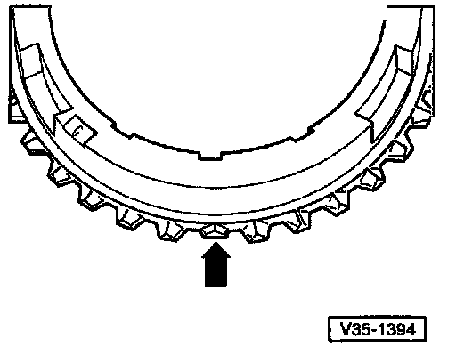
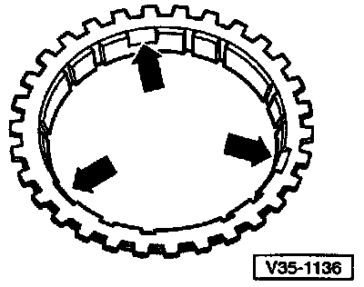

1st Gear Synchro-Ring

Identifying 1st vs 2nd Gear Synchro-Ring By Teeth
- 1st gear synchro-ring has 3 ground-down half teeth (arrow)
- 2nd gear synchro-ring has 2 or 3 ground-down half teeth (arrow)

Identifying 1st vs 2nd Gear Synchro-Ring By Recesses
- 1st gear synchro-ring; no recesses
- 2nd gear synchro-ring; three recesses (arrows)